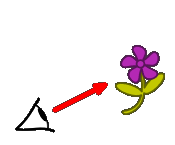
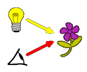

| Falsche Vorstellungen im Altertum
Bereits im Altertum machten sich Naturforscher Gedanken darüber, wie wir Menschen die Welt um uns herum wahrnehmen können. Pythagoras (ca. 570-480 v.Chr.) erklärte sich dies mit vom Auge ausgehenden Sehstrahlen, die von kalten Körpern "zurückgedrängt" wurden. Daraus ergaben sich eine Reihe Redewendungen, welche auf diese Zeit zurückgehen:
|  |
| Ptolemäus (ca. 100-160 n. Chr.) widersprach der Theorie, da diese, durch die Annahme des Ausschicken von Sehstrahlen, vorgibt, auch im Dunkeln sehen zu können. Er vermutet zweierlei Strahlen, durch deren Zusammenwirken das Sehen erst ermöglicht wird: die Sehstrahlen, die vom Auge ausgehen, und die Lichtstrahlen, die von Lichtquellen ausgehen. Zur richtigen Vorstellung mit Lichtsender und Lichtempfänger gelangte die Menschheit erst etwa im 17. Jahrhundert. [9] |  [10] |
| Sehvorgang Das Auge ist ein Lichtempfänger. Nur wenn Licht von einem Gegenstand aus in das Auge fällt, ist dieser sichtbar. Das Auge und Gehirn verarbeiten dann dieses Signal zu dem Bild, welches wir wahrnehmen können. Das empfangene Licht kann von einer Lichtquelle, also ein selbstleuchtender Gegenstand, wie der Sonne oder einer LED, oder von einem beleuchtetem Gegenstand, welcher das Licht einer Lichtquelle in das Auge umleiten muss, wie Mond oder einer Blume, ausgehen. [11] |
 [12]
[12] |